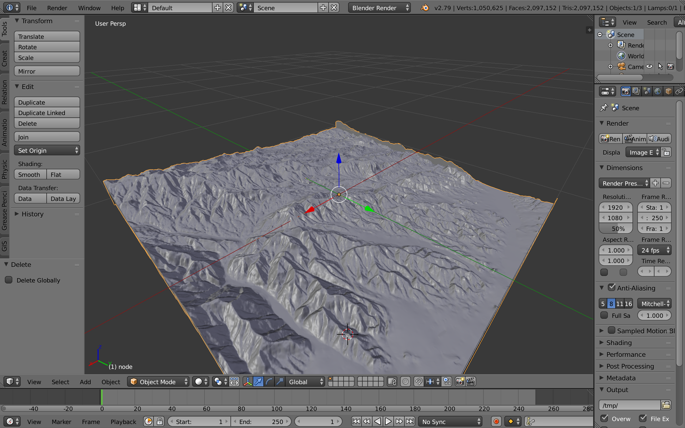

In the fall of 2015 and again in 2017, students in Blair Schoene's GEO 373 (Structural Geology) class traveled to Southern California to a place near the Salton Sea, Diligencia Basin.
The Diligencia Basin is made up of about 1500–2000 m of Oligocene−Miocene continental, siliciclastic sedimentary rocks, subordinate limestone and evaporite deposits, and intercalated basaltic lavas. The sedimentological, stratigraphic, and structural history can be linked to two different tectonic processes, the Basin and Range physiographic province of North America, and the Transverse Ranges of province of California. Interestingly, these processes were active during different periods of the formation history. The complex composition makes the Diligencia Basin a particularly interesting location for 3D modeling of the stratigraphy.
3D stratigraphy models help us visualise geological structures on a deeper level than traditional 2D geological maps. These 3D models show us features such as faults, changes in thickness, tilted units and subsurface contacts, things that usually require complex training in geological techniques to analyze. In cases such as the Diligencia Basin, where the subsurface is incredibly complex and unique, a 3D stratigraphy model is extremely enlightening and useful to practial geological analysis. Due to practical limitations, this 3D stratigraphy is often only recorded for some slices rather than a whole region. However, research into 3D scanning and computer modeling software has given way to methods of compiling recorded data and interpolating what is missing to give an approximate stratigraphic model.
This website is a compilation of data and background on the Diligencia Basin. It includes an interactive 3D model of the area to help illustrate the subsurface features of the reagion and accentuate the importance of 3D stratigraphic modeling.
